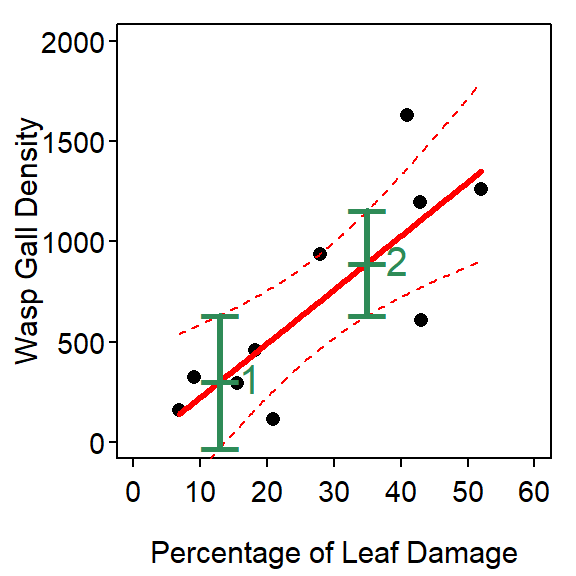
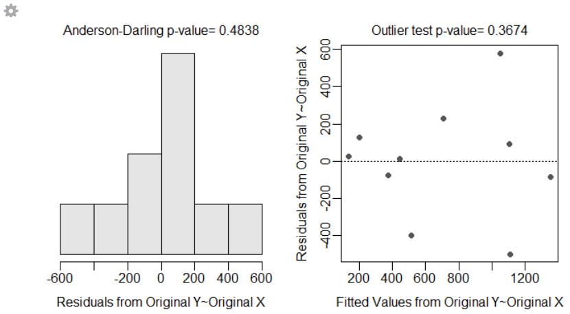

Oak Gall Wasps
Prior and Hellman (2010) investigated the impact of invasive Oak Gall Wasps (Neuroterus saltatorius) on a native butterfly. They hoped to use the amount of damage shown on oak leaves as a surrogate for the density of the wasps’ galls. To examine this they recorded the density of wasp galls (number per leaf) and the percentage leaf damage for ten trees. Is leaf damage a reliable predictor of wasp gall density?
> options(show.signif.stars=FALSE)
> library(NCStats)
> setwd("C:/aaaWork/Web/GitHub/NCMTH207/modules/SLRegression")> df <- read.csv("galls.csv")
> str(df)'data.frame': 10 obs. of 2 variables:
$ damage : num 6.9 9.2 15.6 18.3 20.9 28 43.1 42.9 52 40.9
$ density: int 163 326 296 459 115 936 610 1196 1262 1631> xlbl <- "Percentage of Leaf Damage"
> ylbl <- "Wasp Gall Density"Lecture Support I – Model Fitting and Simple Predictions
> ( lm1 <- lm(density~damage,data=df) )Coefficients:
(Intercept) damage
-45.70 26.82 > fitPlot(lm1,xlab=xlbl,ylab=ylbl)
> predict(lm1,data.frame(damage=35)) 1
893.0516 Lecture Support II – Sampling Variability
> summary(lm1)Coefficients:
Estimate Std. Error t value Pr(>|t|)
(Intercept) -45.703 213.941 -0.214 0.83618
damage 26.822 6.763 3.966 0.00414
Residual standard error: 323.6 on 8 degrees of freedom
Multiple R-squared: 0.6628, Adjusted R-squared: 0.6207
F-statistic: 15.73 on 1 and 8 DF, p-value: 0.004144 > cbind(Ests=coef(lm1),confint(lm1)) Ests 2.5 % 97.5 %
(Intercept) -45.70283 -539.05161 447.64595
damage 26.82156 11.22529 42.41783> fitPlot(lm1,ylab=ylbl,xlab=xlbl,ylim=c(0,2000),xlim=c(0,60),interval="both")
> predict(lm1,data.frame(damage=35),interval="confidence") fit lwr upr
1 893.0516 631.604 1154.499> predict(lm1,data.frame(damage=35),interval="prediction") fit lwr upr
1 893.0516 102.4161 1683.687> predictionPlot(lm1,data.frame(damage=c(13,35)),ylab=ylbl,xlab=xlbl,
ylim=c(0,2000),xlim=c(0,60),interval="confidence")
obs damage fit lwr upr
1 1 13 302.9774 -26.88797 632.8428
2 2 35 893.0516 631.60398 1154.4993Lecture Support III – Model Comparisons
> anova(lm1) Df Sum Sq Mean Sq F value Pr(>F)
damage 1 1646594 1646594 15.727 0.004144
Residuals 8 837587 104698 Lecture Support IV – Assumption Checking
> transChooser(lm1)